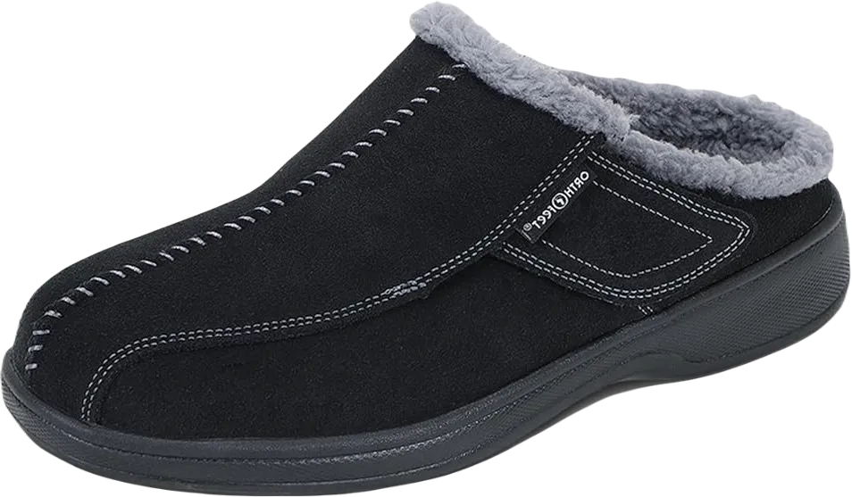
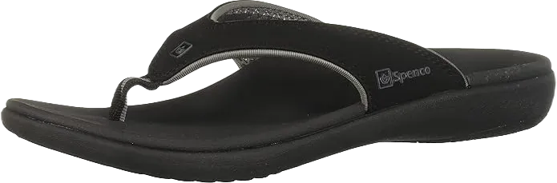
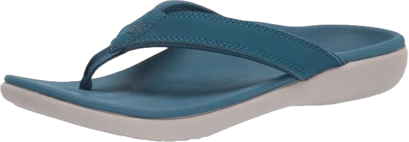

5 Best House Slippers for Plantar Fasciitis 2024
The toes play a crucial role in the body, responsible for distributing weight, maintaining balance, and providing overall stability. Therefore, proper foot care is essential. Our feet are particularly vulnerable during activities such as standing, walking, running, or engaging in any form of physical exercise.
Factors like obesity, improper twisting, or wearing poorly designed or unsupported shoes can lead to severe pain and discomfort that ultimately affects the entire body; often, what begins as discomfort in the feet can escalate throughout the day. Pain that originates in the toes tends to intensify as the day progresses.
-
#1
Slippers men’s Orthofeet Asheville
Essential for comfort, safety, and recovery, the Orthofeet Asheville Slippers are expertly crafted for travel. Available in black or navy suede, these diabetic-friendly slippers not only provide style but also conceal any wear and tear. The hook-and-loop closure ensures easy on and off while offering adjustable versatility.
Orthofeet insoles come equipped with gel heel pockets and an anatomical arch to guarantee comfort throughout wear. They are fully removable, allowing for the addition of your custom orthotics. Foam wrapping and a soft interior enhance each step, providing extra cushioning.
The lightweight sole absorbs shock, and the ergonomic stride design helps reduce pain and pressure by stabilizing and supporting the foot as you walk. -
#2
Vionic with the help of Orthaheel Adilyn
.webp)
These slippers are crafted from plush terry fabric that gently wraps around your feet, providing warmth whether you’re relaxing at home, running errands, or picking up the morning newspaper. With a variety of color options, you can cater to all your casual or stylish home needs while expressing your personal flair.
The slip-on design ensures comfort for those suffering from painful conditions like plantar fasciitis, offering support without invasive closures. The Orthaheel technology features a podiatrist-designed orthotic footbed with deep heel cups that align the foot properly, aiding in body support and strengthening.
This highly effective biomechanical design helps alleviate pain associated with heel issues, joint problems, and numbness. The slippers also feature a wave-patterned sole that provides a secure grip both indoors and outdoors. Available in medium and wide sizes, these slippers cater to various foot needs. -
#3
Spenco Slipper amazing – boys
Spenco's high-slip men's slippers blend suede and nylon to deliver lasting comfort and durability. Designed in a moccasin style, they gently wrap your feet in coziness. The Gore fibers promote healthy stretching, while the antibacterial inner lining keeps your feet warm, dry, and odor-free.
Featuring a spacious toe box suitable for wide feet, these slippers offer exceptional comfort and support while aiding in the recovery of tired or injured feet. Their biomechanical properties are particularly effective in restoring plantar fascia, providing relief from forefoot pain with the Metatarsal Padded Arch support.
A deep heel cup helps align your feet properly, reducing stiffness and preventing further injury. Additionally, the smooth, unmarked heels ensure you can move confidently and comfortably, no matter what challenges arise. -
#4
Spenco Slipper - girls
You might also want to explore Spenco’s incredibly supportive insoles for your favorite home footwear. There's no doubt that you’ll find the information you need to evaluate their offerings. Spenco has introduced a rounded, supportive, and slide slipper style that is tailored specifically for women.
Available in a variety of colors, these stylish options allow you to express your creativity and personal flair. The wool-like fur lining keeps your feet warm and cozy, while the built-in spring mechanism enhances comfort during movement.
Featuring an EVA footbed with arch support and a deep heel cup, these slippers provide integrated comfort, ease, and stability, effectively reducing strain and pain in the foot area. The patterned adherence ensures a secure grip, allowing you to stay on your feet confidently whenever you need to be active. -
#5
Orthaheel women release Slipper

If you're already familiar with Orthaheel products, you know they offer a highly comfortable range of durable and branded sandals. But what about their slippers? These slippers have become a quick favorite among women seeking foot care at home. The Velcro fabric surrounding the footbed provides exceptional comfort and is available in various stylish designs and colors.
Sharp objects on the ground can pierce our skin, furniture can cause discomfort, and extreme temperatures can affect our feet. As a result, slippers play a vital role in providing protection. They not only keep your feet safe but also offer relief from common foot issues and plantar fasciitis.
Slippers are versatile and deliver comfort while addressing everyday foot concerns. With their thoughtful design, they ensure your feet remain well-cared-for, whether you're relaxing at home or moving around.